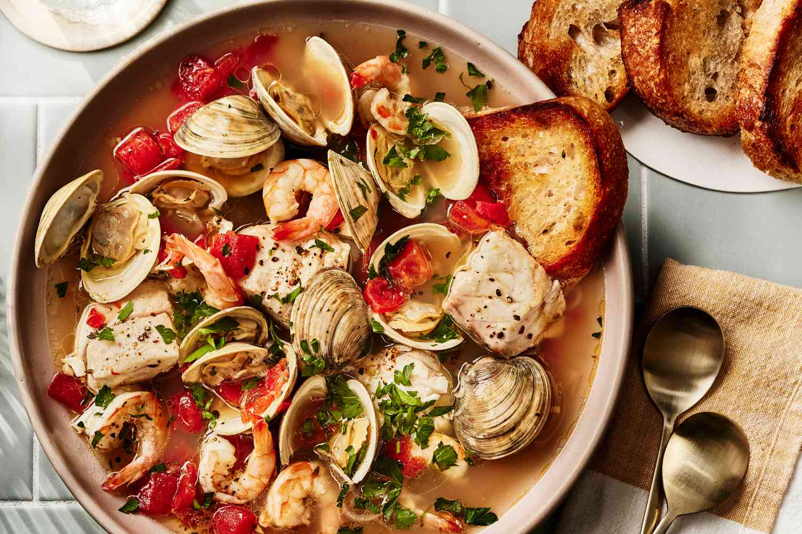

Seafood Stew Recipes

This iconic San Francisco stew often includes a range of shellfish like Dungeness crab, squid, and mussels, all simmered in a tomato broth spiked with wine.
Ingredients
- 2 tablespoons extra-virgin olive oil
- 1 large shallot, thinly sliced
- 2 large garlic cloves, minced
- 1/2 cup dry white wine
- 1 1/2 cups chicken stock or low-sodium broth
- 1 cup bottled clam juice
- 1 cup drained, diced tomatoes (from a 15-ounce can)
- 2 thyme sprigs
- 1 bay leaf
- 1/2 teaspoon hot sauce, plus more for serving
- Salt and freshly ground pepper
- 2 dozen littleneck clams, scrubbed
- 3/4 pound skinless snapper fillets, cut into 2-inch pieces
Instruction
- Heat olive oil in a large soup pot. Add shallot and garlic and cook over high heat, stirring, until softened, about 3 minutes. Add wine and boil until reduced by half, about 3 minutes. Add stock, clam juice, tomatoes, thyme, bay leaf, and hot sauce and season with salt and pepper. Bring to a boil over high heat and cook until slightly reduced, about 10 minutes.
- Add clams, cover and cook just until most of them open, about 5 minutes. Add snapper and shrimp, cover and simmer until they are cooked through and remaining clams have opened, 2 to 3 minutes. Using a slotted spoon, transfer seafood to 4 bowls. Add butter and parsley and cook over moderate heat for 1 minute, swirling pan. Spoon broth over seafood and serve with sourdough toast.